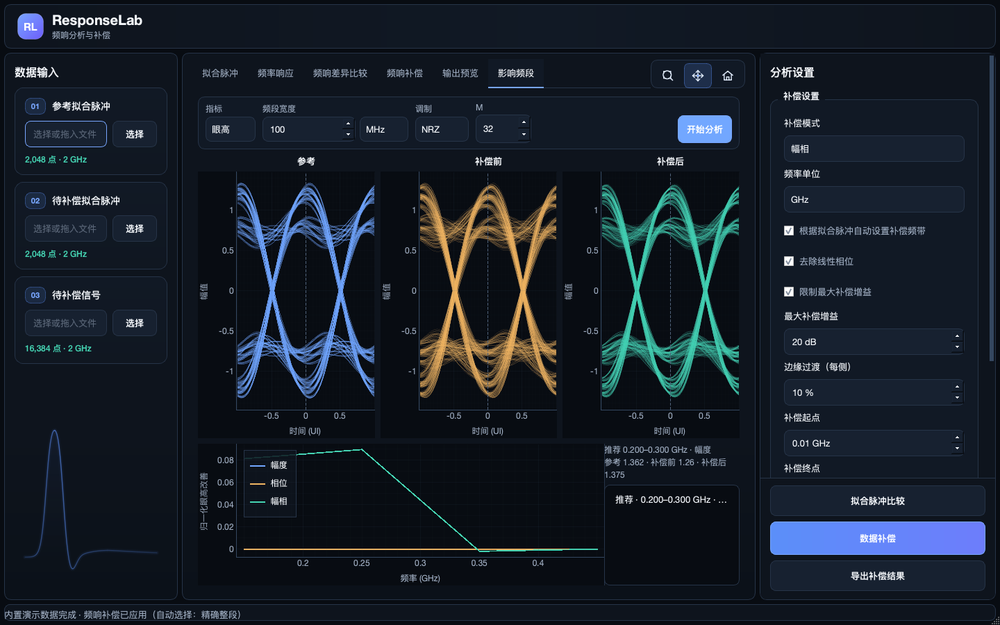
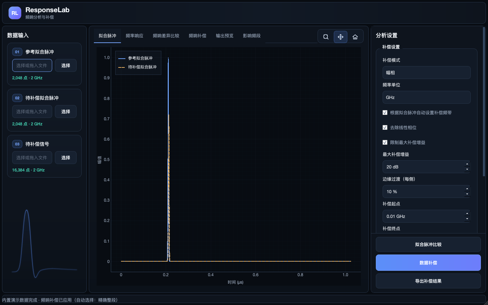
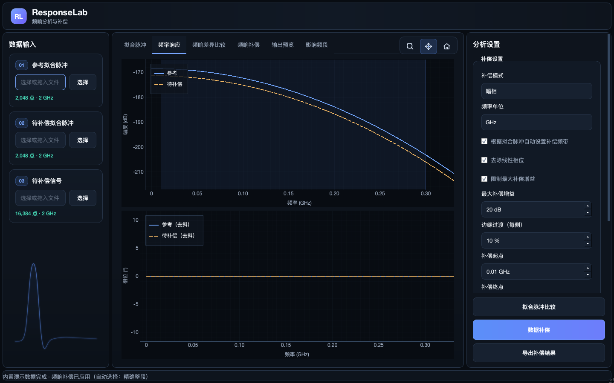
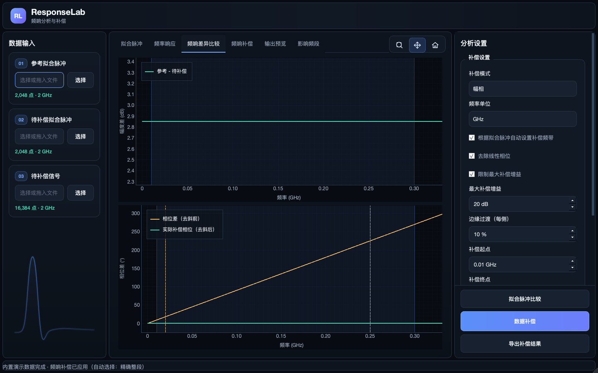
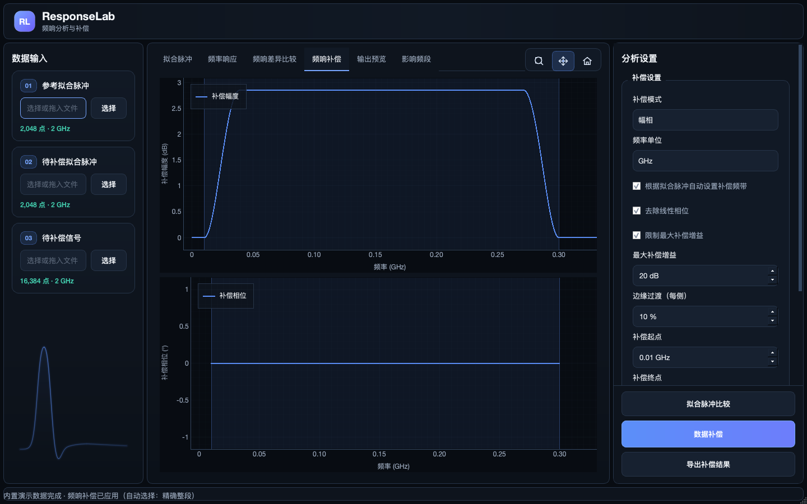
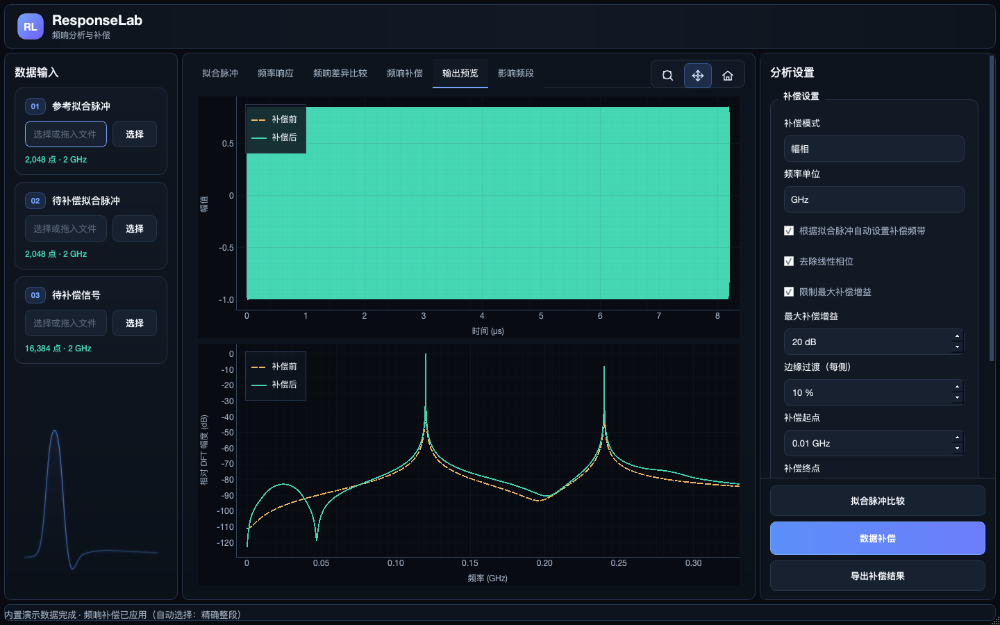

ResponseLab
频响补偿工具使用说明书
面向实际操作人员，逐项说明输入文件、分析设置、六个页签、全部按钮、导出文件和常见错误。文中的界面名称与当前程序一致。
快速开始
先判断自己要完成哪一种任务。三种任务共用两份拟合脉冲，但第三份“待补偿信号”只在真正生成补偿波形时使用。
推荐操作顺序
- 1打开完整的 ResponseLab 程序目录；Windows 试用包应完整解压后运行
ResponseLab.exe，不要单独复制 EXE。 - 2选择“参考拟合脉冲”和“待补偿拟合脉冲”。先确认两张卡片显示点数和采样率。
- 3保持默认“幅相、GHz、自动补偿频带、去除线性相位、20 dB 增益限制”，先做一次“拟合脉冲比较”。
- 4检查频率响应、差异和补偿曲线；确认频带与相位结果合理后，再选择待补偿信号并点击“数据补偿”。
- 5在“输出预览”确认补偿前后趋势，最后点击“导出补偿结果”，保存同一批次的三个输出文件。
界面总览
主窗口由顶栏、左侧输入区、中间结果区、右侧设置区和底部状态栏组成。三栏之间的分隔线可以拖动，右侧设置区可上下滚动。
品牌与全局窗口区域；实际任务状态显示在底部状态栏。

| 区域 | 作用 | 使用时关注什么 |
|---|---|---|
| 顶栏 | 显示产品名称与用途。 | 任务运行、成功、失败与告警以底部状态栏和弹窗为准。 |
| 左侧输入区 | 确定两份脉冲和一份目标波形的文件角色。 | 路径框只读，可点“选择”或把本地文件拖入对应卡片。 |
| 中间结果区 | 在六个页签之间切换，观察波形、频响、差异、补偿和归因结果。 | 图表右上角的放大、平移、恢复工具对所有页签生效。 |
| 右侧分析设置 | 定义补偿模式、频带、相位和增益策略。 | 参数发生变化后，旧预览会失效，必须重新分析才能导出。 |
| 底部状态栏 | 显示当前动作、完成状态、警告和后台进度。 | 任务运行时右侧出现进度条；关闭窗口会请求安全停止，不会强制终止正在进行的 FFT。 |
数据输入
三张输入卡片
| 卡片 | 文件角色 | 支持格式 | 在哪些任务中必需 |
|---|---|---|---|
| 01 参考拟合脉冲 | 目标或理想参考通道的拟合脉冲，定义希望 DUT 接近的频响。 | CSV | 所有任务 |
| 02 待补偿拟合脉冲 | DUT / 被测通道的拟合脉冲，用于与参考计算响应差异。 | CSV | 所有任务 |
| 03 待补偿信号 | 实际要应用频域补偿的时域信号。 | CSV 或 Keysight AG10 BIN | 数据补偿 比较/影响频段不读取 |
文件选中后，卡片先显示“已选择，等待分析”；解析成功后会更新为“点数 · 采样率”。任何输入路径变化都会使依赖该输入的旧结果过期。主“拟合脉冲比较 / 数据补偿”允许两份脉冲的点数和采样率不同，并在共同物理频率范围内比较；“影响频段”是更严格的离散网格模型，限制见该页签说明。
CSV 支持范围
- Keysight Infiniium
File Format, WaveformXYValuesv1/v2，要求Points、X Units, Second、Y Units, Volt和Data完整；v2 还校验数据精度声明。 - Keysight 官方 Python 示例的两列表头：
Time (s),<source> (V)。 - 无表头的两列
time,value，第一列按秒解释，第二列按伏特解释。 - 每行只有一个 CSV 字段，但字段内部包含“时间, 幅度”或“时间 幅度”的兼容记录。
0.000000001,0.014120
0.000000002,0.652300
时间必须严格递增且近似等间隔，采样率由时间列自动推导。工具不会把 Interpolation Factor 当作采样率，也不会静默忽略第三列。Keysight XY CSV 本身允许不等间隔点，但 ResponseLab 的 FFT 处理要求等间隔；仪器导出时应启用 Linearly Interpolate。[Keysight Waveform XY CSV]
Keysight BIN 支持范围
- 只接受 Keysight Infiniium AG Cookie、Version 10（AG10）的自描述 BIN。
- GUI 只接受一个 waveform；对象类型限 Normal / Average，且必须有一个与
Points一致的 little-endian normalfloat32buffer。 - X 单位必须是 Second，Y 单位必须是 Volt；采样率由
X Increment自动计算，时间原点由X Origin恢复。 - 随机裸 BIN、多 waveform、Peak Detect、复合 buffer、未知版本或其他厂商 BIN 会被明确拒绝。
Keysight 官方 BIN 定义说明文件由 File Header、Waveform Header、Waveform Data Header 和数据区组成，并定义 Normal 32-bit float buffer。[Keysight BIN File Format]
为什么普通 CSV/BIN 有时不能导入？
右侧“分析设置”逐项说明
右栏设置同时影响“拟合脉冲比较”“数据补偿”和“影响频段”的频响模型。改变任何有效设置后，旧预览不再代表当前参数，导出按钮会被禁用，直到重新分析。
| 控件 | 可选值 / 默认值 | 功能 | 操作建议 |
|---|---|---|---|
| 补偿模式 | 幅相（默认）/ 仅幅频 / 仅相频 | 决定补偿响应使用幅度差、相位差，还是两者同时使用。 | 首次检查用“幅相”。若只想校正增益起伏选“仅幅频”；若只处理相位失真选“仅相频”。仅幅频时相位设置变灰，仅相频时增益限制变灰。 |
| 频率单位 | Hz / kHz / MHz / GHz；默认 GHz | 只改变频率输入框和图表横轴的显示单位，算法内部始终用 Hz。 | 切换单位会做等值换算，不会改变物理频带。 |
| 根据拟合脉冲自动设置补偿频带 | 默认勾选 | 按两份脉冲各自归一化频谱的共同 −20 dB 最长连续区间推荐补偿频带；补偿边界使用该区间的内部范围。 | 适合第一次分析。它是选带启发式，不是噪声底或相位可信度证明；输入脉冲应先去除明显基线。 |
| 去除线性相位 | 默认勾选 | 仍会估计并报告 DUT 相对参考的时延，但从实际补偿相位中去掉线性项，尽量保持目标波形原有时间位置。 | 若希望补偿同时尝试校正两路相对时延，可取消勾选；仅幅频模式下不可用。 |
| 限制最大补偿增益 | 默认勾选 | 限制幅度补偿上限，降低深陷波或极小 DUT 响应造成异常放大、噪声放大和输出爆炸的风险。 | 一般保持开启。关闭属于专家操作，运行记录会保存该选择。 |
| 最大补偿增益 | 默认 20 dB；范围 0–200 dB | “限制最大补偿增益”开启且模式含幅度时生效。 | 若出现增益限制告警，先检查频带和 DUT 频谱零点，不要直接把上限调得很大。 |
| 边缘过渡（每侧） | 默认 10%；范围 0–50% | 在补偿频带两侧用 raised-cosine 从单位响应平滑过渡到带内补偿，降低硬切频带引起的时域振铃。 | 0% 是硬边界；过渡过大则会压缩满权补偿核心。默认值通常是较稳妥的起点。 |
| 补偿起点 / 终点 | 自动模式下分析后填入；手动模式下可编辑 | 定义实际参与补偿的频率范围。带外严格保持单位响应，即 0 dB、0°。 | 必须满足起点 < 终点，并位于两份脉冲和目标信号共同可用的频率范围内。 |
| 相位拟合频带起点 / 终点 | 首次分析自动建议，之后可手动调整 | 定义线性相位斜率和相对时延的拟合区间。自动补偿带后续更新时，不会反复覆盖已经确认的相位拟合带。 | 避开低能量、零点和相位不连续区。手动改过后，更换脉冲会保留数值并重新校验。 |
图表工具
页签栏右上角有三枚图标按钮，它们控制所有普通图表，也同步控制“影响频段”中的影响曲线、稳态波形和三幅眼图。
| 按钮 | 鼠标行为 | 用途 |
|---|---|---|
| 框选放大 | 左键拖出矩形；滚轮仍可缩放 | 查看某一段频率、时间或眼图轨迹细节。该按钮与“平移”互斥。 |
| 平移 | 按住左键拖动画布；滚轮缩放 | 默认模式。适合在已经放大的图中移动视窗。 |
| 恢复推荐范围 | 单击 | 把当前结果恢复到程序计算的推荐显示范围；频率图会覆盖关键补偿/相位频带，输出时域图回到记录开头的预览窗口。 |
图表推荐 y 轴范围按当前可见 x 区间内的实际曲线计算。低能量或不可解析频点会显示成断线，不能把断点当成“数值为零”。
六个页签逐页说明
前四页描述两份拟合脉冲及由它们构造的候选补偿；第五页显示补偿应用到真实目标信号后的结果；第六页用于定位局部频段对指定指标的影响。
6.1 “拟合脉冲”页签

作用：直接检查两份时域脉冲是否选对、时间轴是否合理、主峰位置和幅度是否存在明显差异。横轴自动选用 ps、ns、µs、ms 或 s；纵轴沿用输入幅值。
- 主峰幅度差可能对应频域增益差；主峰位置差会形成线性相位趋势。
- 图中展示的是两份完整输入脉冲，不是裁剪后的影响频段模型。
- 若曲线为空，先检查 01/02 文件是否选择、格式是否解析成功，再查看底部状态栏或错误弹窗。
6.2 “频率响应”页签

作用：把两份拟合脉冲转换为共同物理频率轴上的幅度和相位，观察 DUT 相对参考在哪些频率上衰减、增强或产生相位差。
- 上图“幅度 / dB”：显示参考与待补偿的原始输入标度，不会把某一路强制归一化为 0 dB。自动选带时才在内部分别按峰值归一化。
- 下图“相位 / °”：只在数值可信的连续频段画线。打开“去除线性相位”时，两路显示去斜后的相位；关闭时显示未去斜相位。
- 蓝色阴影：当前分析或候选补偿频带。阴影之外仍显示诊断曲线，但不会应用带内补偿。
6.3 “频响差异比较”页签

作用：把“需要补多少”直接画出来，是判断补偿方向和选择频带的关键页。
- 幅度差：20 log10(|Href| / |HDUT|)。正值表示 DUT 在该频点相对参考较低，需要正增益；负值表示 DUT 相对参考较高。
- 相位差：含相位模式下显示参考与 DUT 的相位差。打开去斜时会同时给出“去斜前”和“实际补偿相位（去斜后）”；仅幅频模式仍保留相位差作为诊断。
- 橙色虚线：线性相位拟合频带的起点和终点，只在相位参与分析时出现。
6.4 “频响补偿”页签

作用：显示当前参数构造的补偿响应，帮助检查增益、相位、边缘过渡和频带外行为。它仍是基于脉冲分析网格的诊断图；实际应用到目标波形时会在目标记录的真实 DFT 频点上重新计算。
- “仅幅频”时补偿相位为 0；“仅相频”时补偿幅度为 0 dB；“幅相”同时使用两者。
- 频带外严格保持 0 dB、0°。每侧的平滑宽度由“边缘过渡（每侧）”决定。
- 若 DUT 响应接近数值零点，工具可能拒绝运行；最大增益限制不会把数学上不可逆的频点伪装成可安全补偿。
6.5 “输出预览”页签

作用：核对补偿是否已经真正应用到第三份目标信号，而不只是生成了候选补偿曲线。
- 上图：“补偿前 / 补偿后”时域波形。长记录只绘制开头连续最多 40,960 点，以保证交互流畅；完整结果仍保留用于导出。
- 下图：同一连续窗口上的相对 DFT 幅度。两条曲线共用峰值基准，可直接观察补偿带内的相对变化。
- 只执行“拟合脉冲比较”时，本页签禁用，防止把尚未应用到目标信号的补偿响应误认为输出。
6.6 “影响频段”页签
作用：把频率范围划分为候选核心频段，分别试算“幅度、相位、幅相”局部补偿，找出最能让 DUT 指标接近参考的频段。它使用 01/02 两份拟合脉冲，不读取 03 待补偿信号。
顶部公共参数
| 控件 | 作用 |
|---|---|
| 指标 | 在 Vpp、眼高、眼宽中选择一个指标。一次只按一个指标排名，避免把不同量纲混成总分。 |
| 频段宽度 | 定义每个候选的满权核心宽度；默认 100 MHz，单位可选 Hz/kHz/MHz/GHz。两侧还会各接核心宽度一半的半余弦肩部。 |
| 调制 | 眼高/眼宽时可选 NRZ 或 PAM4；Vpp 模式隐藏此项，因为 Vpp 码型由下方“码型来源”定义。 |
| M | 每 UI 样点数（samples/UI），默认 32。关系为 Rs = Fs / M、UI = M / Fs。M 填错会得到物理码率错误但数值看似合理的结果。 |
| 校验两份拟合脉冲和当前参数，后台扫描候选频段。运行时按钮显示“分析中…”，候选列表和相关参数暂时锁定。 |
Vpp 模式专属参数
| 控件 | 作用 | 结果单位 |
|---|---|---|
| 分析方法：LFP | 把理想周期码型分别与参考、DUT 脉冲卷积，计算稳态周期波形的精确 max − min。 | V |
| 分析方法：频域 RMS 误差 | 比较候选波形与参考波形的复频谱差，排除 DC，按 Parseval 计算 AC 误差。它不是“等效 Vpp”。 | Vrms |
| 码型来源：PRBS13Q | 使用内置固定 8191-symbol Gray 映射周期，符号码 0..3 映射到归一化 PAM4 电平。 | 无须外部文件 |
| 码型来源：文件 | 显示“理想码型”路径和“选择”按钮。文件必须是一列整数符号码 0、1、2、3，每行一个值，内容代表完整周期。 | CSV / TXT |
| 峰前保留/UI | 围绕各自 pmax 保留多少个完整前游标 UI；默认 3。 | UI |
| 峰后保留/UI | 围绕各自 pmax 保留多少个完整后游标 UI；默认 8。 | UI |
增加峰前/峰后窗口，直到指标和候选排名收敛。若窗口越过脉冲边界，工具会拒绝，而不会静默截短或补零。
眼高 / 眼宽模式
- 三幅图按“参考、补偿前、补偿后”排列，共用同一时间轴、幅值尺度、冻结主光标和抽样位置，防止靠重新对齐或重新归一化产生虚假改善。
- 每条轨迹覆盖 −1 UI 到 +1 UI。眼高在固定 0 UI 比较相邻轨道内侧经验边界；眼宽在多条电压水平切片上寻找经验开口。
- 眼宽缺少足够 crossing 时显示不可测，不会用 0 UI 冒充闭眼。眼高可能为负，表示轨道重叠。
下方影响曲线与候选列表
- 影响曲线固定显示三条：幅度、相位、幅相。正改善表示该局部补偿使 DUT 更接近参考。
- 不可解析候选以曲线断点显示，不会伪装成零改善。
- 右侧候选列表按推荐/改善顺序显示频段和模式。单击一行会在后台重放该候选，只更新“补偿后”波形/眼图和摘要，不会重扫全部频段。
- 摘要同时显示推荐频段、模式、参考/补偿前/补偿后指标，以及 Fs、Rs、M、UI，便于检查模型物理条件。
全部按钮与可点击功能索引
| 界面位置 | 按钮 / 操作 | 作用 | 何时不可用或不会执行 |
|---|---|---|---|
| 左栏三张输入卡 | 打开文件选择器，把选中的路径写入对应角色。也可把一个本地文件拖到卡片中。 | 取消文件对话框时保持原路径不变；文件内容在点击分析后才完整解析。 | |
| 页签栏右上 | 框选放大 | 切换到矩形缩放模式。 | 与平移模式互斥；空图无可放大内容。 |
| 页签栏右上 | 平移 | 切换到拖动画布模式；默认选中。 | 与框选放大互斥。 |
| 页签栏右上 | 恢复范围 | 所有图表恢复当前数据推荐显示范围。 | 空图只恢复为空范围，不会生成数据。 |
| 右栏底部 | 只读取 01/02，计算并展示脉冲、频响、差异和候选补偿响应。 | 缺少 01/02、文件不存在、参数无效或已有后台任务时不启动。 | |
| 右栏底部 | 读取 01/02/03，把补偿应用到目标信号，启用输出预览和导出。 | 缺少任一输入、内存预算不足、响应不可逆、频带无有效 DFT 点、已有后台任务等情况下不启动或明确失败。 | |
| 右栏底部 | 保存主输出、响应诊断 CSV 和 JSON 参数记录三件套。 | 初始禁用；只有当前参数对应的数据补偿成功后启用。任何相关输入/参数变化都会再次禁用。 | |
| 影响频段顶部 | 按当前指标和候选宽度扫描主要影响频段。 | 缺少两份脉冲、外部码型缺失、M/频宽无效、成本或内存超限、已有后台任务时不启动。 | |
| 影响频段 Vpp 文件行 | 选择一列理想码型 CSV/TXT。 | 只在“指标=Vpp 且码型来源=文件”时显示。 | |
| 影响频段候选列表 | 单击候选行 | 重放该频段和模式，更新补偿后详情与指标摘要。 | 分析中、没有有效候选、重复点击当前行或后台任务占用时不重复执行。 |
| 窗口关闭按钮 | 关闭窗口 | 空闲时立即关闭；任务运行时请求安全取消，并在当前不可中断数值步骤完成后关闭。 | 不会使用强制终止来破坏正在写入的结果。 |
导出补偿结果
点击“导出补偿结果”并选择主输出路径后，工具会把三个文件作为同一批次生成。若任一目标已存在，会列出所有将被替换的文件并要求一次确认。
参数和源文件与分析时一致
CSV 输入导出 CSV；BIN 输入导出 BIN
先写暂存文件并校验
成功后弹窗列出三个路径
| 文件 | 示例命名 | 内容与用途 |
|---|---|---|
| 主补偿输出 | signal_compensated.csv 或 .bin | 与输入等长的补偿波形。CSV 为无表头 time,value；BIN 为单 waveform Keysight AG10，保存采样间隔、时间原点和 Volt 单位。 |
| 响应诊断表 | signal_compensated_response.csv | 保存参考/DUT 幅相、原始差异、拟合线性相位、去斜后的相位源和补偿响应，用于复核图表与后续分析。 |
| 参数与溯源记录 | signal_compensated.csv.response-lab.json | response-lab-manifest/v4：输入来源与哈希、有效设置、相对时延、应用策略、输出统计和输出哈希。 |
导出取消时，原有目标文件保持不变。若系统报告“导出批次可能不完整”或“需要检查临时/恢复文件”，应按弹窗列出的路径人工检查，不要把该状态当作普通成功。
常用工作流
工作流 A：先比较，不改写目标信号
- 选择 01 参考脉冲、02 DUT 脉冲。
- 保持自动频带，点击“拟合脉冲比较”。
- 依次检查“拟合脉冲 → 频率响应 → 频响差异比较 → 频响补偿”。
- 若需要手动范围，取消自动频带，输入补偿起止和相位拟合范围后重新比较。
可观察结果：前四个页签有曲线；“输出预览”和“导出补偿结果”保持禁用；状态栏说明未读取或改写待补偿数据。
工作流 B：生成可导出的补偿波形
- 完成工作流 A，并确认补偿曲线无明显异常。
- 选择 03 待补偿信号 CSV 或 AG10 BIN。
- 点击“数据补偿”，等待进度条消失且状态栏显示补偿已应用。
- 进入“输出预览”查看补偿前后波形和频谱。
- 点击“导出补偿结果”，确认三件套路径。
可观察结果：输出预览启用；导出按钮启用；输入/输出点数和时间轴保持一致。
工作流 C：查找最值得优先处理的频段
- 选择 01/02 两份脉冲，进入“影响频段”。
- 选择 Vpp、眼高或眼宽；设置频段宽度、M，并按需要设置调制或 Vpp 码型。
- 点击“开始分析”，等待影响曲线与候选列表出现。
- 先看推荐摘要，再核对幅度/相位/幅相三条曲线是否有稳定正改善。
- 点击其他候选行，比较补偿后详情；必要时改变频段宽度或 M 后重新分析。
可观察结果：下方曲线有三种模式；候选列表可点击；摘要给出 Fs、Rs、M、UI 和三份同口径指标。
常见问题与处理
| 现象 / 提示 | 常见原因 | 处理方法 |
|---|---|---|
| “输入不完整” | 比较缺 01/02；数据补偿缺 01/02/03；Vpp 文件模式缺理想码型。 | 按任务补齐对应文件。影响频段不需要 03 待补偿信号。 |
| “文件不存在 / 无法读取” | 文件被移动、删除、网络盘断开或权限不足。 | 重新选择本地可读文件；不要只修改只读路径框。 |
| CSV 单位或 Points 错误 | 不是受支持的 WaveformXYValues，或表头与数据行数/单位不一致。 | 在仪器导出时选择 Waveform XY CSV，确保 X=Second、Y=Volt；或转换为无表头两列 time,value。 |
| 时间轴不均匀 | XY 数据使用不等间隔采样。 | 在 Infiniium 保存时启用 Linearly Interpolate，或在外部工具中按明确方法重采样后再导入。 |
| BIN 不是 AG10 / 多 waveform / buffer 不支持 | 文件属于其他版本、其他格式家族、Peak Detect 或包含多条波形。 | 在仪器端另存为单 waveform、Normal/Average、AG10；不要把裸 float 文件仅改扩展名。 |
| “参数无效” | 频带起止反向、超出共同 Nyquist、M 不满足指标条件、窗口越过脉冲边界等。 | 按弹窗中的具体值修正；先恢复自动频带和默认 M=32 验证基础流程。 |
| 补偿频带内无有效 DFT 点 | 目标记录过短，频率分辨率不足以命中窄频带。 | 扩大补偿频带或使用更长的目标记录；不要用显示插值点替代真实 DFT 频点。 |
| DUT 频响接近零点，无法反演 | 所选频带包含数值不可解析的深零点。 | 缩小或移动补偿频带；检查脉冲质量。提高增益上限不能解决不可逆零点。 |
| 内存预算不足 / 候选过多 | 目标记录、Vpp 周期或眼图候选工作区超过当前安全预算。 | 关闭占用内存的程序、使用更合理的候选宽度或更短的理想码型周期；主补偿会在可行时自动改用有限边界分块。 |
| 输出预览或导出按钮变灰 | 尚未完成数据补偿，或输入/参数已变化导致旧预览失效。 | 按当前输入和参数重新点击“数据补偿”。 |
| 影响曲线出现断点 | 该模式在该频段不可解析，而不是“改善为零”。 | 查看诊断文字，避开频谱零点或改变候选频段宽度。 |
| 关闭窗口后没有立即消失 | 后台正在完成不可强制中断的单次 FFT/IFFT/卷积或安全写入步骤。 | 等待状态栏提示的安全停止完成，不要强制结束进程或拔掉目标磁盘。 |
怎样正确理解结果
- “推荐频段”不是合规结论：它表示在当前脉冲、M、码型、窗口和候选宽度条件下，局部补偿最能改善当前选定指标。
- 眼高/眼宽不是 BER 等值眼：1% 分位描述固定轨迹数据库的经验边界，不代表 1% BER，也不能替代示波器或链路接收机测量。
- Vpp 两种方法不可混用：LFP 输出 V，频域 RMS 误差输出 Vrms；后者衡量与参考的 AC 频谱误差，不是峰峰值。
- M 是物理条件：M 改变 Rs、UI 时长、脉冲窗口和眼图采样。先从实际采样率和符号率求 M，再使用整数值。
- 预览有限，导出完整：长记录的界面只画有限连续窗口；最终文件保持完整点数和时间轴。
- 软件拒绝是保护：非均匀时间轴、不可逆零点、复杂 Nyquist 端点、内存超限或来源变化都可能触发失败关闭，防止输出看似整齐但无法认证的数据。
术语表
| 术语 | 本说明书中的含义 |
|---|---|
| 参考拟合脉冲 / Reference | 目标、理想或基准通道的脉冲响应。 |
| 待补偿拟合脉冲 / DUT | 需要向参考靠近的被测通道脉冲响应。 |
| 待补偿信号 / Target | 真正要应用补偿的时域数据文件。 |
| Fs | 采样率，单位 Sa/s；由文件时间轴或 BIN 的 X Increment 自动得到。 |
| Rs | 符号率，Rs = Fs / M。 |
| UI | Unit Interval，一个符号的时间，UI = 1/Rs = M/Fs。 |
| M | 每 UI 的样点数，必须与数据的实际 Fs/Rs 关系一致。 |
| pmax | 拟合脉冲中首次出现的最大绝对值样点，用作 Vpp 模型窗口和眼图主光标的时间参考。 |
| 去除线性相位 / detrend | 从相位差中去掉与频率成线性的项，保留非线性相位差，并报告相对时延。 |
| 边缘过渡 | 补偿带边缘的 raised-cosine 平滑区，占补偿带宽的每侧百分比。 |
| AG10 | ResponseLab 当前支持的 Keysight Infiniium 二进制波形版本子集。 |
| manifest | 与主输出同时生成的 JSON 参数、来源、策略和哈希记录。 |
文档版本与功能依据
本说明书按以下软件快照核对，后续界面升级时应重新盘点控件、页签和导出合同。
| 项目 | ResponseLab / frequency_response_compensator |
|---|---|
| 仓库快照 | a78e1ecfed5f3643f9e5ff5032cc282567716d2d（2026-08-31） |
| 主窗口与按钮 | src/response_lab/ui.py：ResponseLabWindow、_build_left_panel、_build_visual_workspace、_build_inspector、_start_task、_populate_plots、_export |
| 影响频段页 | src/response_lab/influence_ui.py：InfluenceBandPage、current_request、_update_metric_visibility |
| 启动与真实界面截图 | src/response_lab/app.py：run_gui、run_gui_smoke_test、build_demo_run、build_demo_influence_run |
| 导出合同 | src/response_lab/reporting.py：bundle_paths、build_manifest、批次提交与回滚逻辑 |
外部格式资料
- Keysight Infiniium User Guide — Waveform Files (XY Values) (.csv)：WaveformXYValues 表头、v1/v2 示例和 Linearly Interpolate 选项。
- Keysight Infiniium User Guide — BIN (.bin)：BIN 文件包含头部和二进制数据，以及多 waveform / 插值选项。
- Keysight Infiniium User Guide — BIN File Format：File Header、Waveform Header、X/Y 单位、X Increment 与 Normal 32-bit float buffer 字段。
ResponseLabWindow、程序内置确定性演示数据和 Qt offscreen 渲染路径生成；界面烟雾检查通过。截图只证明当前窗口能够呈现这些控件和演示曲线，不替代 Windows 办公终端人工验收或仪器一致性验证。